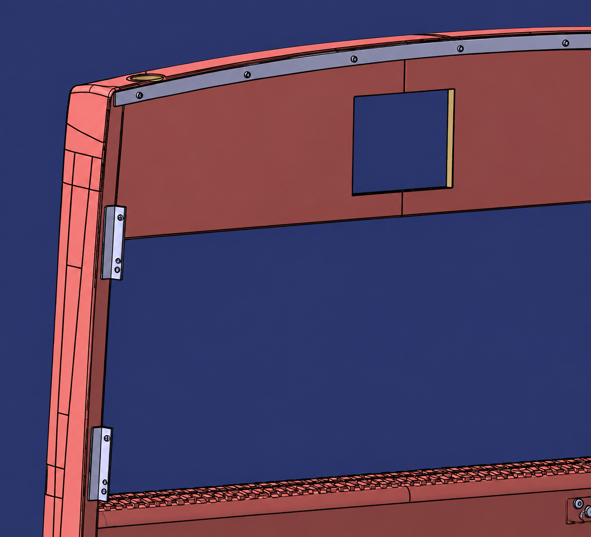
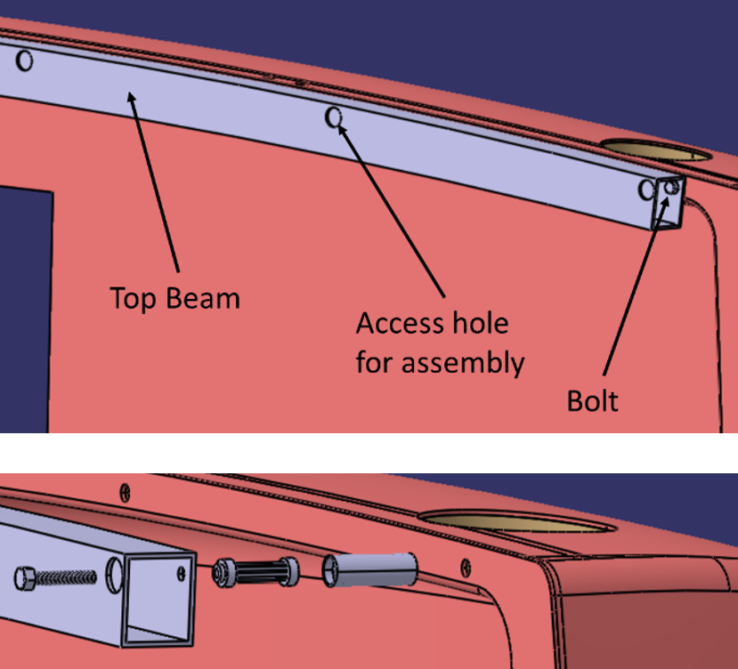
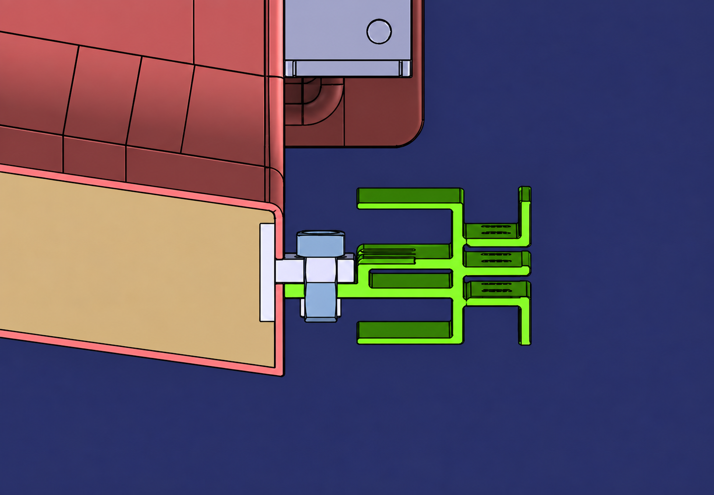
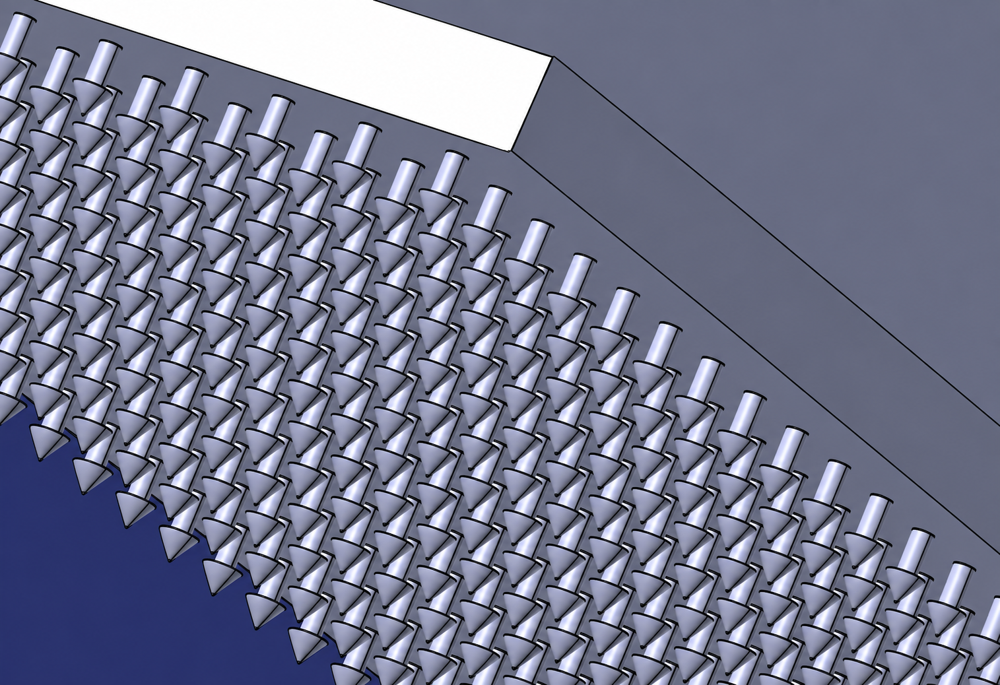
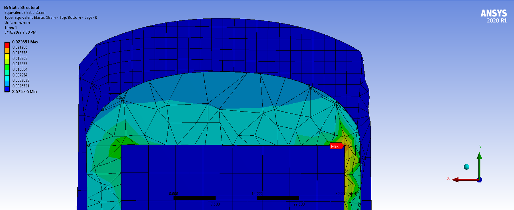

Characterized the existing design and defined constraints
The existing rear-cap structure was documented and used as the benchmark. Technical, manufacturing and economic constraints were then defined for the development of the new joining system.
Volvo Buses was developing a lightweight composite sandwich rear cap for its city bus platform. The challenge was connecting the new composite structure to the existing metal frame without compromising the sandwich structure. My master thesis, conducted in collaboration with Volvo Buses, developed and compared different joining concepts for this composite-metal interface.

The existing rear cap used a conventional metal structure. The new design introduced a GFRP and PUR-foam sandwich structure, creating a fundamentally different joining problem.
Unlike conventional metal structures, sandwich composites require careful load introduction into the skins and core. The joining system therefore had to transfer loads into the composite while remaining compatible with the surrounding steel and aluminium structures.
At the same time, the solution had to remain cost-efficient, manufacturable and compatible with the production processes considered for the composite rear cap.
The existing rear-cap structure was documented and used as the benchmark. Technical, manufacturing and economic constraints were then defined for the development of the new joining system.
Several joining principles were translated into detailed concepts for integrating the composite sandwich rear cap with the surrounding metal structure.
Critical load cases and potential failure modes were investigated. Numerical analysis using ANSYS was used to compare the structural behaviour of selected concepts.
Material, manufacturing and assembly steps were broken down to estimate the production cost of the different joining solutions.
Cost, weight, mechanical behaviour, supplier risk and repairability were combined in a multi-objective decision analysis to compare the concepts under different priorities.
Metal inserts integrated into the sandwich structure and potted into the foam core, creating defined mechanical connection points for the surrounding bus structure.
Metal plates bonded to the composite skin using adhesive and subsequently connected to the surrounding metal frame.
Metal profiles integrated into the sandwich core before the final composite layup, creating a mechanically locked interface within the structure.
A concept using small metallic pins integrated into the glass-fibre layers to create a mechanical interface between the composite laminate and the metal joining structure.



The concepts were compared across production cost, mechanical performance, repairability and supplier risk. Because the numerical analysis was not performed for every concept, the FEM results provide a comparative indication rather than a complete structural validation.
| Insert | Adhesive | Flap | Micro-pin | |
|---|---|---|---|---|
| Estimated production cost | 4,577 SEK | 3,447 SEK | 4,114 SEK | 5,008 SEK |
| Mechanical performance | n.a. | Best | Good | Okay |
| Repairability | Decent | Excellent | Decent | Decent |
| Supplier risk | Medium–low | Low | Low | Medium–high |

The adhesive concept showed the strongest overall combination of production cost and evaluated mechanical performance. It had the lowest estimated production cost and was ranked highest among the concepts included in the numerical comparison.
The flap concept remained a strong alternative. It combined comparatively good mechanical behaviour with low supplier risk and conventional metal components.
The micro-pin concept offered a more novel joining approach. However, the concept introduced higher supplier uncertainty and showed the weakest performance of the three concepts included in the numerical comparison.
The final recommendation depended on the weighting of the evaluation criteria. The multi-objective decision analysis allowed different priorities such as cost or weight to be applied instead of relying on a single fixed ranking.